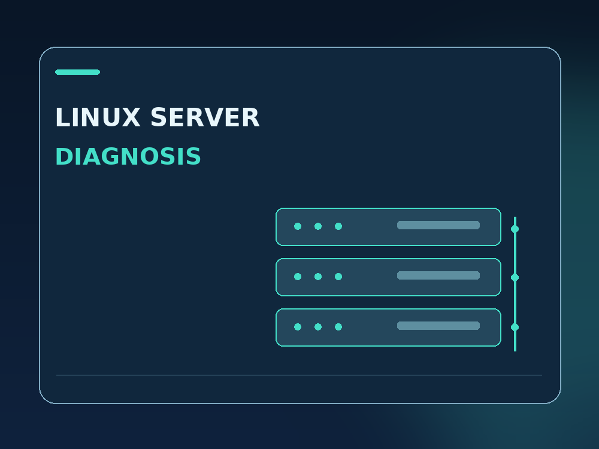
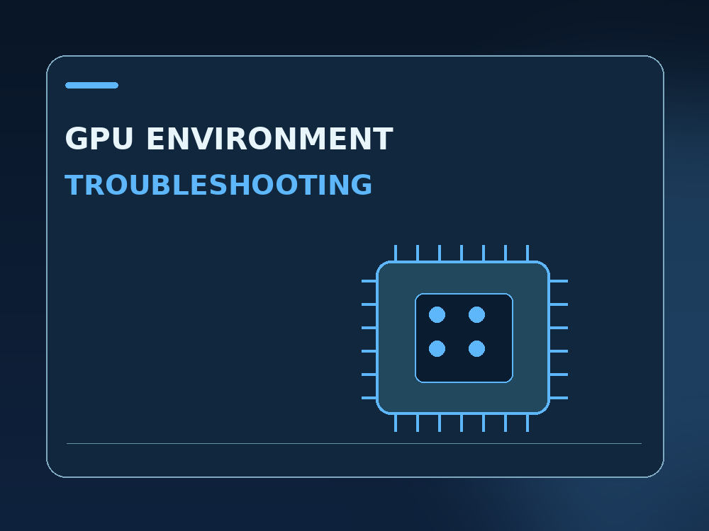

Linux server diagnosis
Ubuntu/CentOS issues, Nginx, systemd, networks, service health and root-cause reporting. No unapproved production changes.
Indicative from $49One clearly defined issue, with an evidence-based report.Practical infrastructure engineering for teams running Linux servers, NVIDIA GPU workloads and self-hosted AI applications. Start with one scoped task, evidence-led diagnostics, safe changes and clear handover.
The indicative prices below are planning estimates, not live Project Catalog offers. Scope and a formal quote are agreed through Upwork.

Ubuntu/CentOS issues, Nginx, systemd, networks, service health and root-cause reporting. No unapproved production changes.
Indicative from $49One clearly defined issue, with an evidence-based report.
Driver and dependency compatibility, environment reproducibility, diagnostics and validation. Client supplies the required GPU compute.
Indicative from $79A version matrix and practical remediation plan.
One agreed and lawfully licensed Linux AI or transcription workflow, smoke testing, restart/rollback notes and handover.
Indicative from $99A reproducible installation or compatibility plan.An openly reviewable Rust CLI inspects Linux load/memory, NVIDIA GPU inventory and AI runtime prerequisites without altering systems. Unit tests and GitHub Actions verify the code. These are our own lab examples, not customer outcomes.
See the code, tests and tutorials ↗Agree on the environment, failing behavior and outcome.
Collect permitted evidence and isolate potential causes.
Apply only approved, reversible work within scope.
Test the result and hand over clear documentation.
Share the symptoms, software versions, a sanitized error and the outcome you need. A specific first milestone is more useful than a broad promise.
Contact through Upwork ↗